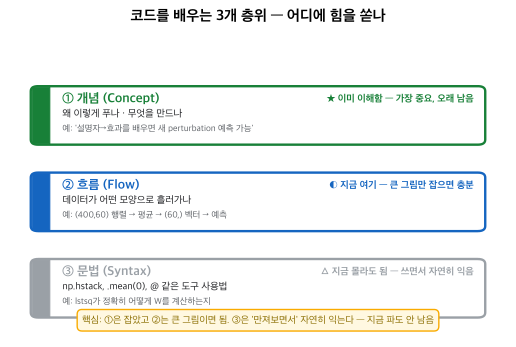
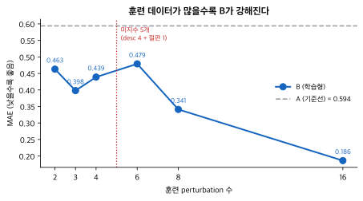

완성된 코드를 읽기만 하지 않고, 한 줄씩 바꿔서 결과가 어떻게 변하는지 확인한 기록. 개념을 '몸으로' 이해하는 방식.
코드 배움엔 ①개념(왜 이렇게 푸나) ②흐름(데이터가 어떤 모양으로 흐르나) ③문법(도구 사용법) 3층이 있다. 문법을 한 줄씩 완벽히 외우는 건 지금 단계엔 비효율 — 개념은 이미 잡았고, 문법은 만져보면서 자연히 익는다.

바꾼 코드 한 줄: X = data['descriptor'][tr] → X = np.random.permutation(data['descriptor'])[tr]
(각 perturbation에 엉뚱한 특징을 붙여 짝을 파괴)
| 모델 | MAE↓ | PDS↑ | DES↑ |
|---|---|---|---|
| A (기준선) | 0.594 | 0.0 | 0.792 |
| B (정상 descriptor) | 0.186 | 1.0 | 0.923 |
| B (뒤섞은 descriptor) | 0.559 | 0.429 | 0.784 |
→ 예측 적중. 정상 B(MAE 0.186)가 descriptor를 뒤섞자 0.559로 3배 악화 — 거의 A(0.594) 수준.
바꾼 것: 훈련 perturbation 수를 16 → 8 → 6 → 4 → 3 → 2로 축소.
| 훈련 수 | MAE↓ | PDS↑ |
|---|---|---|
| 2 | 0.463 | 0.786 |
| 3 | 0.398 | 0.75 |
| 4 | 0.439 | 0.929 |
| 6 | 0.479 | 0.964 |
| 8 | 0.341 | 1.0 |
| 16 | 0.186 | 1.0 |

→ 큰 방향 적중(16개=0.186 최고, 줄일수록 악화). 반전 두 가지:
두 실험이 같은 곳을 가리킨다 — 학습형 모델의 성능 = 좋은 입력 특징(descriptor) × 충분한 데이터. STATE가 수억 세포로 학습해 강한 것도 실험 2의 원리다. 모델을 키우면(파라미터↑) 데이터도 그만큼 더 필요하다(미지수↑ → 방정식↑).